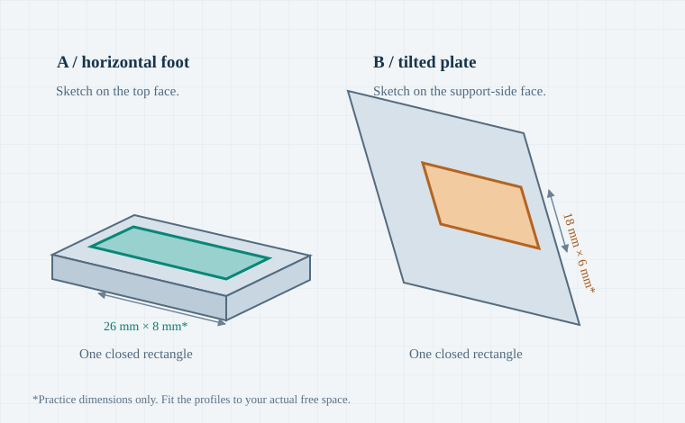
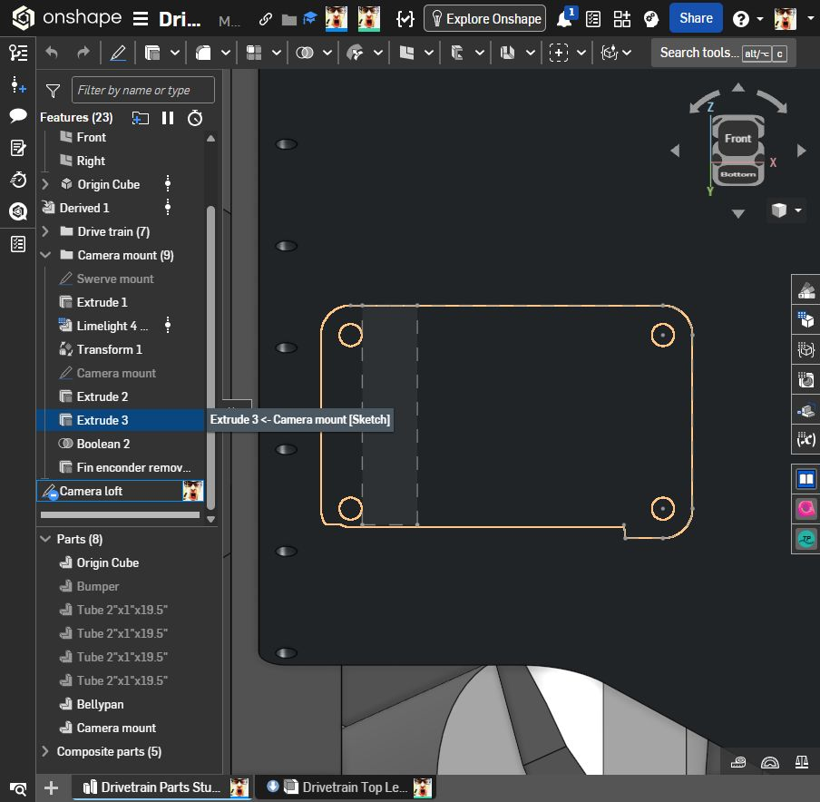

Loft your camera mount.
Blend a footprint on the base into a smaller profile on the tilted camera plate. A loft builds the material between them.

Inside your actual document
I inspected Drivetrain → Drivetrain Parts Studio on October 29, 2026. These are live document references; the colored teaching diagrams are schematic.

Find the correct items
- Camera mount (9) is a feature folder.
- Camera mount under Parts is the solid to merge into.
- Camera loft is currently a sketch, not a Loft feature.
Reuse your starting sketch
Its sketch plane is Face of Extrude 3. Inspect its closed regions before reusing it as profile B. The name alone does not create a loft.
The sketch is under-defined. A closed under-defined sketch can still loft; dimensions and constraints make it more reliable.
A reinforcing transition on the mount side of the plate. Hide the camera to find that side. Pick a clear area away from screws, fins, connectors, and the swerve hardware.
The sections can change shape and angle.
Extrude
Pushes one profile in a straight direction. Good when the cross-section stays the same.
Loft
Transitions between profiles. Useful here because the foot and plate face different directions.
Sweep
Carries a profile along a path. Useful for a tube or cable route.
Give the loft two ends.
Draw one closed region on the foot and one on the plate. Keep them separated and use four sides on both for your first attempt.

The rectangles should fit fully on solid mount material, and the volume between them should stay clear of hardware. The 26 × 8 mm and 18 × 6 mm dimensions are practice values, not validated sizes for your mount. Enter units explicitly if your document uses inches.
Create the base profile
- Get a clear view. In Parts, right-click Camera mount → Zoom to selection. Hide the camera composite if it blocks the mount side.
- Select a flat top face of the foot. Choose Sketch. The face itself supplies the sketch plane; an offset plane is not required.
- Draw a corner rectangle inside the usable foot area. Start with a small footprint away from bolt holes and tool access.
- Size and locate it. Use Dimension for width, depth, and distances to stable edges. Keep construction geometry out of the loop.
- Finish the sketch with the green check. Rename it Loft A — foot.
Inspect “Camera loft”
- Right-click Camera loft → Edit. Its inspected plane is Face of Extrude 3. Use a normal view to see its outline clearly.
- Check that it is the intended support-side face. If it is the wrong face, cancel and create a separate sketch on the correct mount face.
- Reuse one suitable closed rectangle. If none exists, draw a small rectangle on this face, above and separate from profile A. Do not select the entire plate with its bolt holes.
- Dimension the region and its position. Keep it inside the plate and aligned with A along the mount's width. Use matching corner order on both profiles.
- Finish the sketch. Keep the name Camera loft or rename it Loft B — plate so you recognize it.

Two regions, two planes
Hover inside each loop. You should be able to identify a filled sketch region, not only individual lines. If the mount face obscures the sketch, temporarily hide the Camera mount part while checking the sketch regions.
- Close any tiny gaps with Coincident constraints.
- Remove duplicate or overlapping sketch segments.
- Keep the profiles physically separate; avoid crossing loops.
- Each profile must contact its mount face over an area, not only touch at a point or edge.
No plane button needed? Correct. Existing flat faces can be sketch planes. Use Plane → Offset only when you need a profile floating away from a face.
Connect A to B.
Finish sketch editing, open Loft, and choose the two filled regions in order. Then add the preview to the Camera mount part.
Loft
Start by selecting the teal region A.
- Start condition
- None
- End condition
- None
- Guides / Path
- Off
- Merge scope
- Camera mount
This panel demonstrates the choices. Make the actual selections in Onshape.
Build your first working version
Open the feature
Finish all sketches. Click Search tools in the top toolbar, search for Loft, and open it. Choose Solid, then Add.
Make sure both sketch regions are visible. Onshape remembers its last creation type, so check Solid explicitly.
Select the profile interiors
Activate the Profiles field. Click inside A / foot, then inside B / plate. Look for two separate profile entries in that order.
If the whole underlying face highlights, temporarily hide Camera mount and select the sketch region. Restore the part before checking the merge.
Keep the controls simple
Start and end conditions: None. Leave Guides and continuity and Path off. A basic two-profile loft can have straight sides; curvature controls are optional.
Rotate the preview. It should bridge the intended gap with no pinching or sideways twist. If corners cross, see the next page.
Merge and accept
Set Merge scope → Camera mount. If Merge with all is enabled, turn it off and select that part explicitly. Verify the loft joins the support over a face area.
Accept with the green check. Rename the feature Camera support loft. You should still have one Camera mount solid, with the support added.
Temporarily switch to New to see whether the shape can be generated. If New works, investigate contact and merge scope. Switch back to Add before accepting the final support. A detached New part is only a diagnostic preview.
Make the result make sense.
A successful feature is the first checkpoint. Now check the shape, the merge, and the space needed by the camera and its hardware.
Match the symptom to the fix
No region to click
Your sketch may have a gap, a duplicate segment, or construction-only geometry. Edit that sketch, zoom to every corner, and close the loop with Coincident constraints. Finish the sketch and select its interior.
If a solid face covers the region, hide the part temporarily. Sketch line color indicates constraint state; it does not by itself prove that a region is closed.
The entire plate or its holes are selected
Remove that selection from Profiles using its ×. Hide the mount part temporarily and select only the rectangle's sketch region. Restore the part to inspect the result. The plate outline and bolt holes are not the two ends of this practice support.
The loft twists or pinches
Check for two simple four-sided profiles first. Enable Connections in Loft. Pair corresponding corners: left with left, right with right, following the intended sides.
Onshape displays automatic connections in magenta. For explicit match connections, each entry contains a pair of vertices or edges, one from each profile. Add another pair if needed. Remove conflicting matches and keep profiles in travel order.
New works, but Add fails
The shape is probably valid, but its contact or merge is not. Set Merge scope to Camera mount. Check the real gap in a side view or section view: the loft must meet the mount over a finite area. A point or edge contact can create invalid zero-thickness geometry.
Keep sketches attached to the intended faces. Move or resize a profile if the loft only grazes the mount. Return to Add before accepting.
The loft bulges or intersects hardware
Reset start/end conditions to None. Reduce the profile sizes or move them into a clear zone. A loft follows the selected profiles, not the surrounding hardware; it will not automatically route around screw heads, connectors, or the swerve module.
If you later need a controlled side boundary, add a guide that intersects every profile boundary. Use Pierce or Coincident constraints to enforce the intersections. Add one control at a time.
I want a smoother transition
After the basic loft works, edit it and try Normal to profile at one end. That makes the loft's tangent direction align with that profile's normal. Adjust Magnitude gently and watch for bulges.
Match tangent and Match curvature depend on suitable adjacent model faces. They are not general-purpose smoothing switches. For a rounded root, a small Fillet after the loft may be easier; verify that the fillet still leaves adequate material.
Orbit around the whole mount.
Show the camera and surrounding parts again. Use a side view and a section view if contact or internal clearance is hard to see.
Geometry
Access & fit
Sketch A → sketch B → Loft → Add.
These pages teach the modeling workflow. Example dimensions and diagrams are not a structural or manufacturing validation of your mount.
Document and feature names were inspected in your linked Part Studio on October 29, 2026. Loft controls, profile order, connections, and merge behavior were checked against Onshape's official Loft help. No CAD geometry was changed while preparing this guide.